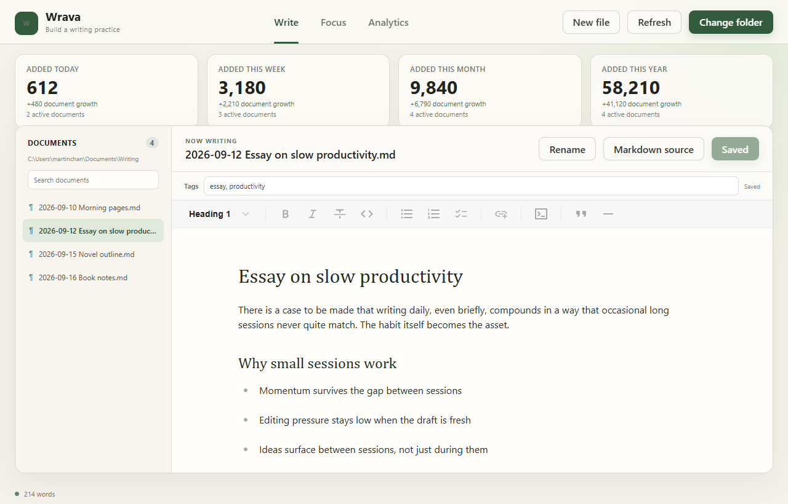
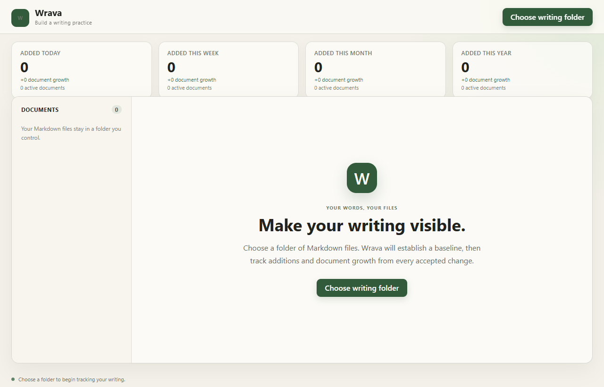
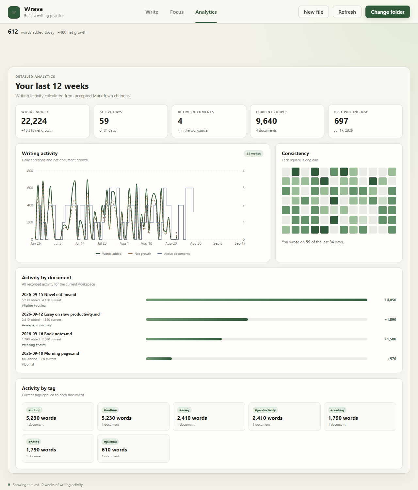

Wrava turns a folder of ordinary Markdown files into a writing practice you can see. Every accepted change is measured as words added, words deleted, and net document growth, all stored on your own machine.

A calm, distraction-light editor paired with an analytics page that turns raw edits into a 12-week trend, a consistency heatmap, and per-document and per-tag breakdowns.


Wrava is an early, actively developed project.
Wrava runs natively on Windows via Tauri. Installers are attached to every tagged release on GitHub.